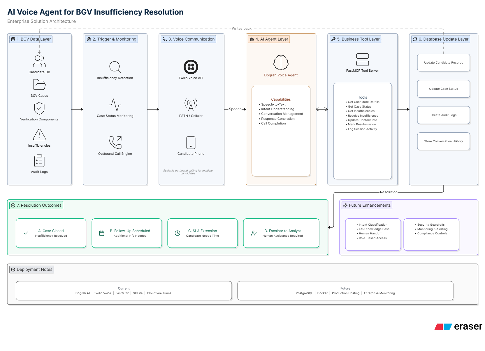

A voice-driven solution that automates candidate follow-up for background verification insufficiencies, reduces analyst effort, and accelerates case resolution through structured conversation and record updates.
BGV teams often face incomplete records, invalid references, missing documents, and unresolved verification issues. Analysts spend significant time manually contacting candidates, tracking responses, and updating records.
The solution introduces an AI voice agent that automatically calls candidates when an insufficiency is detected, collects required information, updates records, and routes exceptions when needed.

Completed Validated In Progress
| Scenario | Total Cost (USD) | Total Cost (INR) |
|---|---|---|
| Call usage only | $9.75 | ₹839 |
| With 1 Twilio number | $11.25 | ₹968 |
| With 10 Twilio numbers | $24.75 | ₹2,129 |